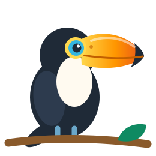

Inglês para a turma toda, sem custo para a escola.
O Tuca é uma plataforma de inglês nível A1 com trilhas curtas, pontos, revisão inteligente e um painel para o professor acompanhar cada aluno. Gratuita para escolas públicas e comunidades da periferia.

Por que o Tuca existe
Aprender inglês ainda é um privilégio em muitos bairros. Aulas particulares e aplicativos pagos ficam fora do alcance de boa parte das famílias, e muitas escolas públicas não têm ferramentas digitais pensadas para a realidade da turma.
O Tuca nasceu para mudar isso: uma plataforma no formato que os estudantes já conhecem dos jogos e aplicativos, mas feita para a sala de aula, com conteúdo em português, passo a passo e acompanhamento do professor. Para escolas públicas e comunidades, o acesso é gratuito.
Como funciona
Trilha guiada
Cada unidade abre com um guia gramatical e segue por quatro práticas e uma revisão geral. A próxima sessão só libera quando a anterior termina.
Revisão com SM-2
Um baralho de revisão espaçada traz de volta palavras e frases na hora certa, para fixar o que foi aprendido.
Jogo em turma
Missão coletiva da sala, pódio, mural e emblemas mantêm a turma engajada.
Painel do professor
Turmas, metas, ranking, tempo de estudo, precisão e histórico por aluno, com exportação em CSV.
Sessão 1: dez unidades do dia a dia
O conteúdo segue o nível A1 do CEFR e se divide em quatro sessões. A primeira cobre situações reais para quem está começando:
- Ofereça e aceite bebidas
- Diga de onde você é
- Apresente você e sua família
- Navegue pelo aeroporto
- Use adjetivos para descrever
- Peça comida e bebidas
- Fale sobre profissões
- Use o tempo presente
- Fale sobre o tempo
- Fale sobre seus animais de estimação
Acompanhe o Professor Kennedy
Dicas de inglês, novidades do Tuca e bastidores do projeto nas redes sociais.
De graça para quem mais precisa
Escolas públicas e comunidades da periferia usam o Tuca sem pagar nada. Envie o nome da escola e da turma e receba o acesso do professor e os códigos dos alunos.
Pedir cadastro da escola